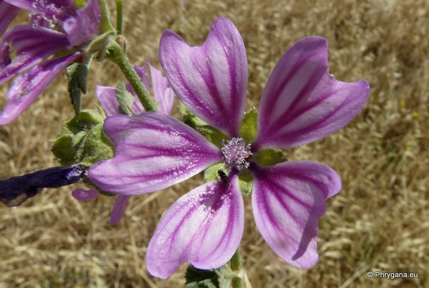
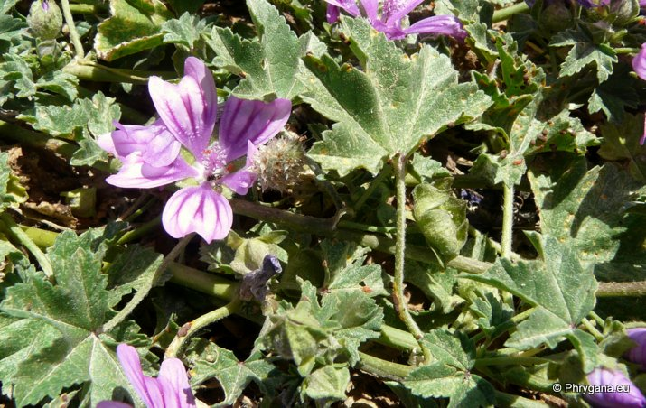
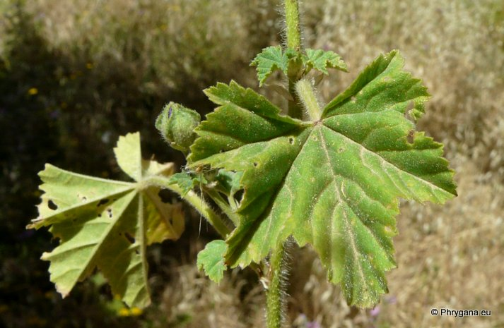
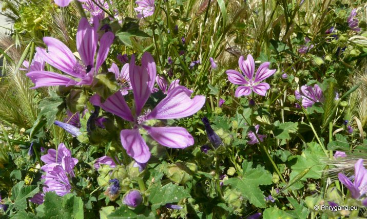

| PHRYGANA | Fauna | Flora | Galles | liste des espèces |
contact -
info - commentaires phrygana1 (at) gmail.com |
| Particularités crétoises | nouveautés | Mines | ressources naturelles |
| Malva sylvestris L. |
| 443 | Flora | MALVACEAE | Malva L. |
|
 Malva sylvestris Rethymno centre-ville 18 avril 2013 |
| la Mauve sauvage - Wilde Malve - Groot kaasjekruid - Common Mallow - Malva selvatica - Malva común - Μολόχα | |
| Feuilles: feuilles caulinaires à limbe à 3-7 lobes subtriangulaires-oblongs à semi-circulaires; pétiole à poils simples, étalés | |
| Fleurs: à l'aisselle des fleuilles; couronne rose pourpré (avec des veines plus foncées), (14-)20-24 mm, 3-4 fois aussi longue que le calice; pétales tronqués, échancrés; face inférieure des sépales avec des poils étoiles et des poils simples; tube des étamines glabre | |
| Fruit: akènes glabres ou peu velus, ridés-réticulés | |
| Hauteur: 15 - 120 cm | Type biologique: thérophyte ou hémicryptophyte ramifié |
| Floraison: mars avril mai | |
| Altitudes: 0 - 1400 m | |
| Statut en Crète: indigène | |
| Biotopes en Crète: terrains vagues, olivaies, friches, vignobles, bords de cheminsterrains riches en nitrates (abords des habitations, fermes) | |
| Origine: Europe, Asie occidentale, Afrique du Nord | |
| Plante mellifère; plante médicinale. Espèce nitrophile | |
|
 Malva sylvestris Rethymno centre-ville 18 avril 2013 |
|
 Malva sylvestris Rethymno centre-ville 18 avril 2013 |
|
 Malva sylvestris Rethymno centre-ville 18 avril 2013 |
| 01 mai 2013 |
| © paul fontaine -- © Phrygana.eu 2007 -- 2013 |